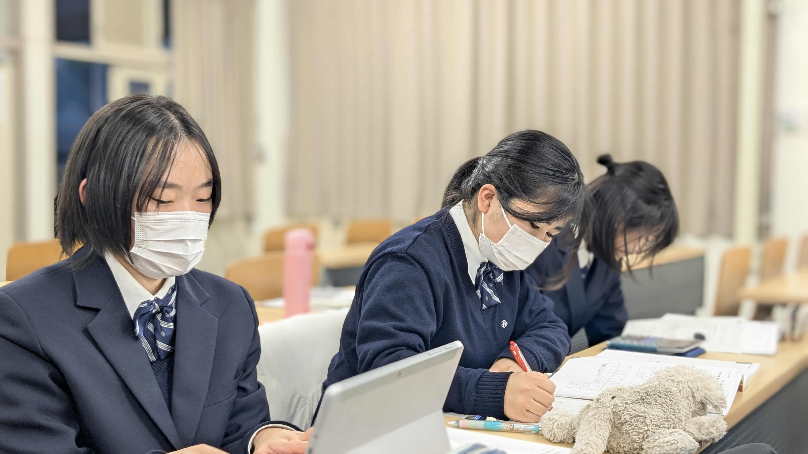
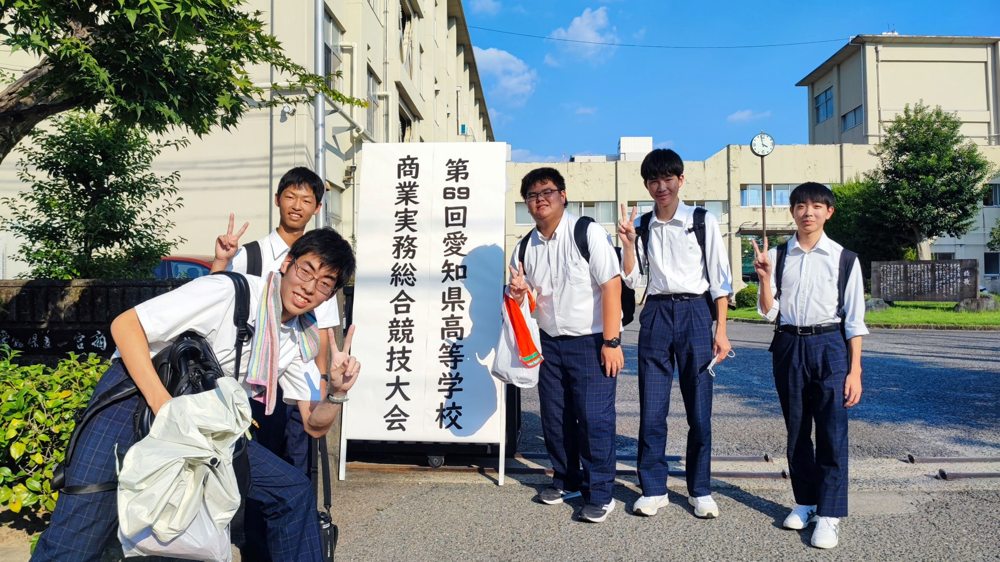
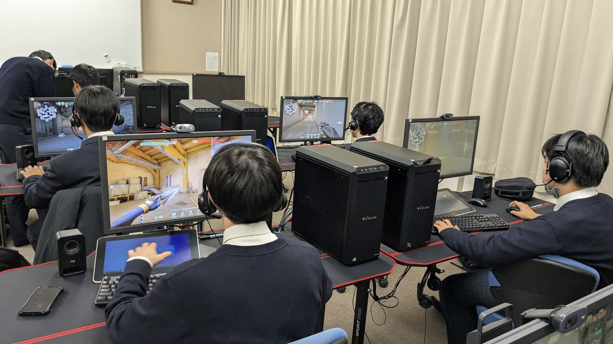
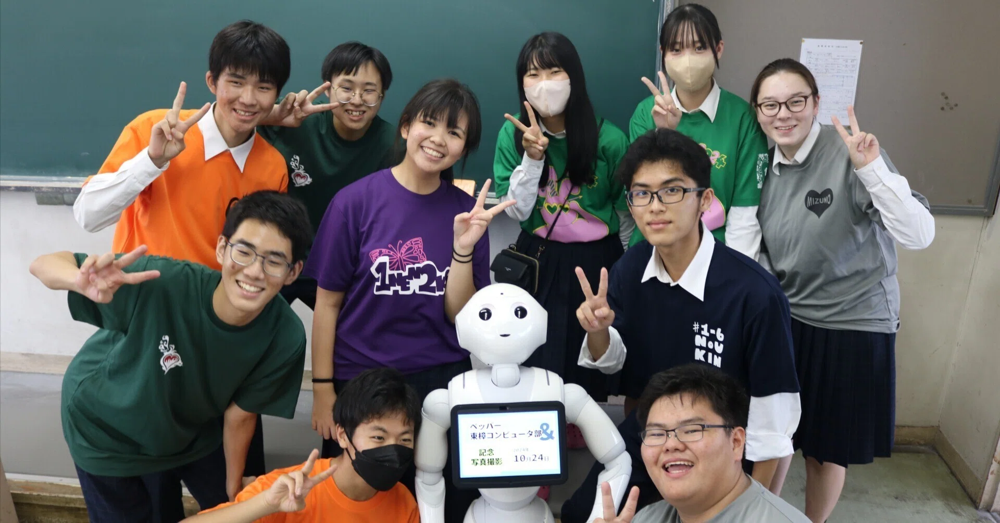

主な活動内容
資格の取得

情報系の資格を中心に、取得を目指し勉強します
情報以外の資格でも、生徒間での教えあいや、商業と情報どちらも免許を持つ顧問に聞くこともできるため、部員は様々な資格を多く取得しています
1年生のうちに全商情報処理検定の1級を取得、ITパスポートまたは基本情報技術者の取得を目指します
《取得可能な資格例》
- 全商情報処理検定各2級
- 全商情報処理検定各1級
- ITパスポート
- 基本情報技術者
- 応用情報技術者
大会への出場

様々な大会に向け日々努力を重ねています
情報処理の筆記問題を解き競う情報処理競技大会、AIの利活用で独自のテーマを研究し総合的な評価で競うAI甲子園などなど
《出場大会例》
- 愛知県高等学校情報処理競技大会
- 全国高等学校情報処理競技大会
- AI甲子園
- 全国高等学校AIアスリート選手権大会「シンギュラリティバトルクエスト」
- 全国情報教育コンテスト
e-Sports

部室にある高性能PCを使用し、e-Sportsにも挑戦しました
VALORANTでSTAGE:0へ出場しています
また、外部の講師を招き、講習会なども行われています
《参加例》
- VALORANT
- STAGE:0
- VALORANT講習会
その他外部活動

IT企業へのインターンシップや大学でのアントレプレナーシップ教育、東海市に新しく建設される建物の竣工式でのOP動画制作などにも取り組んでいます
インターンシップでの実務経験や、動画編集能力など、やってみたいと思うことに挑戦できるため、幅広い能力が身につきます
《活動例》
- 夢プロジェクト・インターンシップ
- 愛知県立大学 高校生向けアントレプレナーシップ教育
- IT系イベント ボランティア
- 東海市創造の杜交流館竣工式OPMV制作
- ペッパー君による文化祭企画